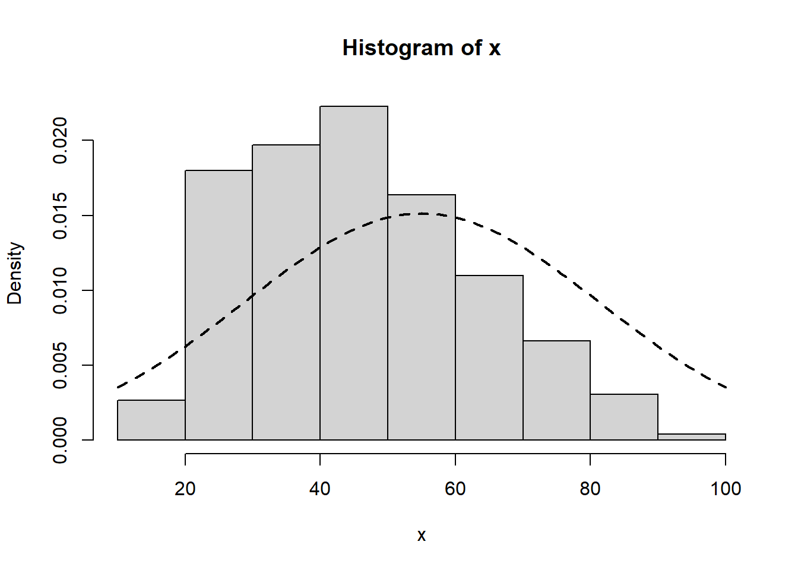
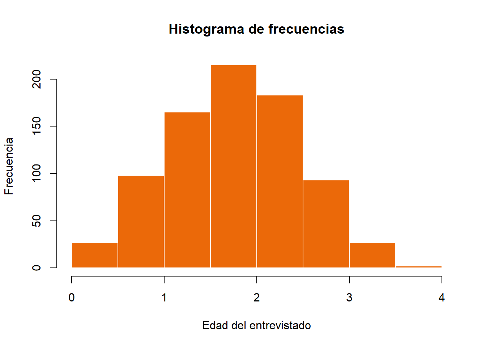
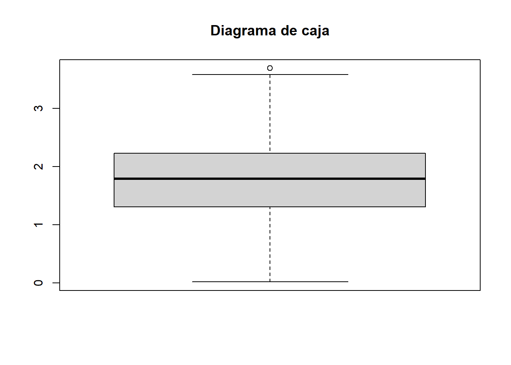
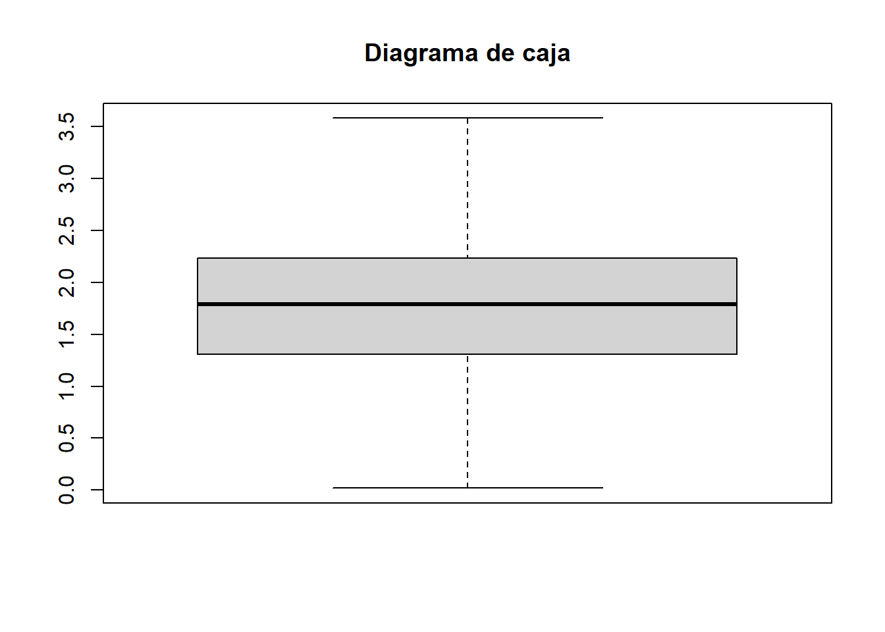
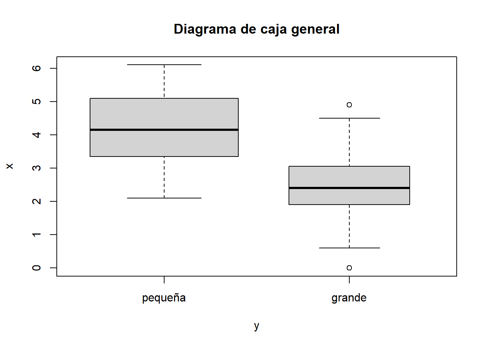
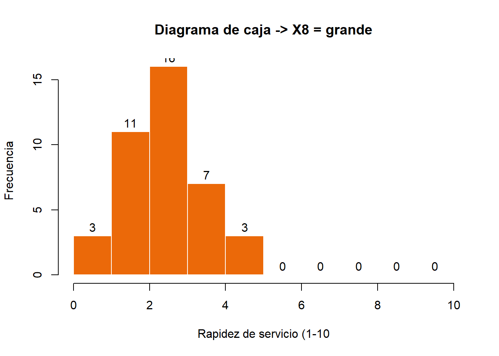
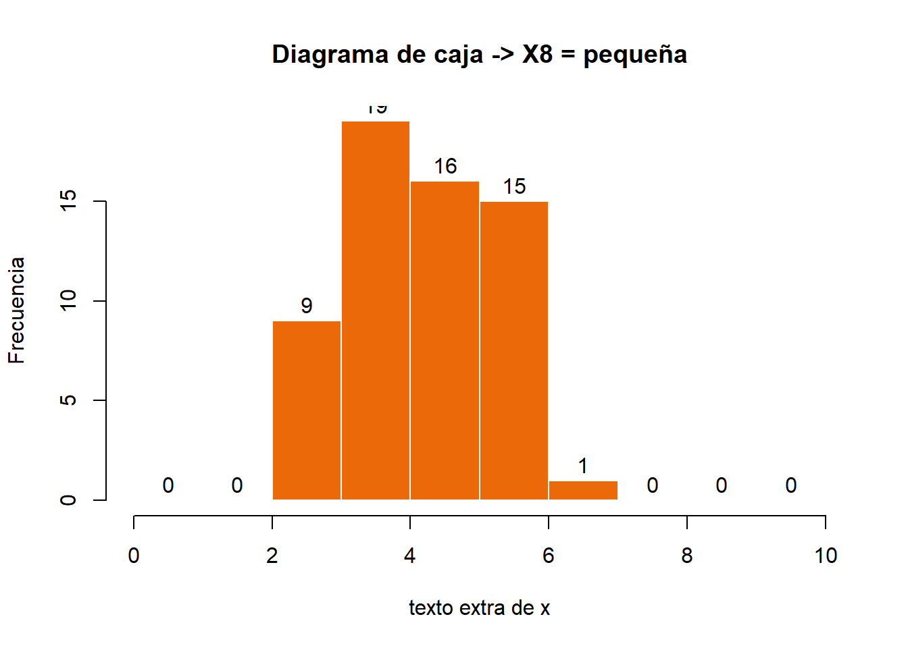

Parte 5 EDA (exploratory data analysis) - Sesiones 1 y 2
La sesión 01 (y la 02) de esta asignatura está dedicada a realizar una introducción a los procedimientos básicos de trabajo con datos provenientes de recogidas estructuradas de datos o de investigaciones de mercado, predominantemente de encuesta. En las sesiones 01 y 02 estudiaremos entre otras pruebas:
- Exploración de los datos: introducción y herramientas básicas para la exploración de los datos.
- Herramientas de exploración: comprobación de la linealidad, normalidad y homocedasticidad
- Inferencia estadística paramétrica
- Inferencia estadística no paramétrica
El siguiente documento replica todos los cálculos estadísticos de la primera sesión de la asignatura “Técnicas Multivariantes en Investigación de Mercados” dentro del máster oficial en Marketing e Investigación de mercados realizados con SPSS. Este documento intenta ser una guía ilustrativa y demostrativa de como se trabaja con R, magnificando todas las virtudes de este software.
En esta primera sesión, particularmente acometeremos el trabajo básico de:
- instalar el software R
- instalar el software RStudio
- subir los datos de la asignatura
- obtener el cálculo de frecuencias e histogramas
- obtener los descriptivos
- analizar la normalidad estadística
- analizar la homogeneidad de varianza
5.1 Carga de paquetes
Los paquetes aquí listados son específicos para estas siguientes sesiones. Ver la Parte R1a) para resto de paquetes cargados esenciales.
#install.packages(c('car','outliers', 'psych', 'nortest', 'Hmisc', 'vcd', 'ca', 'corrplot', 'factoextra', 'FactoMineR', 'gplots', 'DT', 'lmtest', 'sjstats', 'igraph'))
suppressMessages(library('car', quietly = TRUE))
suppressMessages(library('outliers', quietly = TRUE))
suppressMessages(library('psych', quietly = TRUE))
suppressMessages(library('nortest', quietly = TRUE))
suppressMessages(library('Hmisc', quietly = TRUE))
suppressMessages(library('vcd', quietly = TRUE))
suppressMessages(library('ca', quietly = TRUE))
suppressMessages(library('corrplot', quietly = TRUE))
suppressMessages(library('factoextra', quietly = TRUE))
suppressMessages(library('FactoMineR', quietly = TRUE))
suppressMessages(library('gplots', quietly = TRUE))
suppressMessages(library('DT', quietly = TRUE))
suppressMessages(library('lmtest', quietly = TRUE))
suppressMessages(library('sjstats', quietly = TRUE))
suppressMessages(library('igraph', quietly=TRUE))5.2 Carga de datos
En nuestro trabajo deberemos cargar datos provenientes de fuentes como archivo texto (paquete readr), archivos xls o xlsx (paquete readr) y archivos SPSS (paquete expss). Las instrucciones serán muy simples. Para evitar repetir la carga en diferentes secciones de este capítulo, cargamos inicialmente todos los archivos. Los paquetes mencionados deberán haber sido cargados previamente.
#sesiones 01 y 02
fib2 <- suppressMessages(read_spss("https://download.tesigandia.com/tmim/fib_2.sav"))
gssnet1 <- suppressMessages(read_spss("https://download.tesigandia.com/tmim/gssnet1.sav"))
hatco <- suppressMessages(read_spss("https://download.tesigandia.com/tmim/hatco.sav"))
gssft1 <- suppressMessages(read_spss("http://download.tesigandia.com/tmim/gssft1.sav"))
gssnet2 <- suppressMessages(read_spss("http://download.tesigandia.com/tmim/gssnet2.sav"))
endorph1 <- suppressMessages(read_spss("http://download.tesigandia.com/tmim/endorph1.sav"))
anxiety <- suppressMessages(read_spss("http://download.tesigandia.com/tmim/anxiety.sav"))
hatco <- suppressMessages(read_spss("http://download.tesigandia.com/tmim/hatco.sav"))
data2 <- suppressMessages(read_spss("http://download.tesigandia.com/tmim/manners1.sav"))
grades <- suppressMessages(read_spss("http://download.tesigandia.com/tmim/grades1.sav"))
bdi <- suppressMessages(read_spss("http://download.tesigandia.com/tmim/bdidrogas1.sav"))5.3 Frecuencias e histogramas
Usaremos el paquete expsspara obtener todos los cálculos que tengan que ver con el manejo de la
estadística básica paramétrica y relacionados con los cálculos de frecuencia.
5.3.1 Frecuencias
Calculamos las frecuencias de la variable AGE obteniendo una salida similar al SPSS. Las frecuencias son la base de trabajo del investigador, cuántas veces sucede un evento. El estilo SPSS muestra diferentes columnas con el valor absoluto y el relativo, poniendo como base todos los casos del banco de datos o todos los casos válidos del banco de datos.
# recuento de frecuencias
fre(gssnet1$age) | Age of respondent | Count | Valid percent | Percent | Responses, % | Cumulative responses, % |
|---|---|---|---|---|---|
| 18 | 10 | 1.0 | 1.0 | 1.0 | 1.0 |
| 19 | 10 | 1.0 | 1.0 | 1.0 | 2.0 |
| 20 | 6 | 0.6 | 0.6 | 0.6 | 2.6 |
| 21 | 13 | 1.3 | 1.3 | 1.3 | 4.0 |
| 22 | 9 | 0.9 | 0.9 | 0.9 | 4.9 |
| 23 | 18 | 1.8 | 1.8 | 1.8 | 6.7 |
| 24 | 26 | 2.6 | 2.6 | 2.6 | 9.3 |
| 25 | 21 | 2.1 | 2.1 | 2.1 | 11.5 |
| 26 | 20 | 2.0 | 2.0 | 2.0 | 13.5 |
| 27 | 17 | 1.7 | 1.7 | 1.7 | 15.2 |
| 28 | 22 | 2.2 | 2.2 | 2.2 | 17.5 |
| 29 | 12 | 1.2 | 1.2 | 1.2 | 18.7 |
| 30 | 19 | 1.9 | 1.9 | 1.9 | 20.6 |
| 31 | 17 | 1.7 | 1.7 | 1.7 | 22.4 |
| 32 | 19 | 1.9 | 1.9 | 1.9 | 24.3 |
| 33 | 23 | 2.3 | 2.3 | 2.3 | 26.6 |
| 34 | 24 | 2.4 | 2.4 | 2.4 | 29.1 |
| 35 | 24 | 2.4 | 2.4 | 2.4 | 31.5 |
| 36 | 12 | 1.2 | 1.2 | 1.2 | 32.7 |
| 37 | 13 | 1.3 | 1.3 | 1.3 | 34.0 |
| 38 | 22 | 2.2 | 2.2 | 2.2 | 36.3 |
| 39 | 13 | 1.3 | 1.3 | 1.3 | 37.6 |
| 40 | 27 | 2.7 | 2.7 | 2.7 | 40.3 |
| 41 | 17 | 1.7 | 1.7 | 1.7 | 42.1 |
| 42 | 17 | 1.7 | 1.7 | 1.7 | 43.8 |
| 43 | 19 | 1.9 | 1.9 | 1.9 | 45.7 |
| 44 | 24 | 2.4 | 2.4 | 2.4 | 48.2 |
| 45 | 19 | 1.9 | 1.9 | 1.9 | 50.1 |
| 46 | 26 | 2.6 | 2.6 | 2.6 | 52.7 |
| 47 | 21 | 2.1 | 2.1 | 2.1 | 54.9 |
| 48 | 24 | 2.4 | 2.4 | 2.4 | 57.3 |
| 49 | 26 | 2.6 | 2.6 | 2.6 | 60.0 |
| 50 | 26 | 2.6 | 2.6 | 2.6 | 62.6 |
| 51 | 18 | 1.8 | 1.8 | 1.8 | 64.4 |
| 52 | 18 | 1.8 | 1.8 | 1.8 | 66.3 |
| 53 | 10 | 1.0 | 1.0 | 1.0 | 67.3 |
| 54 | 17 | 1.7 | 1.7 | 1.7 | 69.0 |
| 55 | 15 | 1.5 | 1.5 | 1.5 | 70.5 |
| 56 | 21 | 2.1 | 2.1 | 2.1 | 72.7 |
| 57 | 18 | 1.8 | 1.8 | 1.8 | 74.5 |
| 58 | 13 | 1.3 | 1.3 | 1.3 | 75.8 |
| 59 | 14 | 1.4 | 1.4 | 1.4 | 77.2 |
| 60 | 17 | 1.7 | 1.7 | 1.7 | 79.0 |
| 61 | 14 | 1.4 | 1.4 | 1.4 | 80.4 |
| 62 | 19 | 1.9 | 1.9 | 1.9 | 82.3 |
| 63 | 9 | 0.9 | 0.9 | 0.9 | 83.2 |
| 64 | 10 | 1.0 | 1.0 | 1.0 | 84.2 |
| 65 | 7 | 0.7 | 0.7 | 0.7 | 85.0 |
| 66 | 11 | 1.1 | 1.1 | 1.1 | 86.1 |
| 67 | 12 | 1.2 | 1.2 | 1.2 | 87.3 |
| 68 | 7 | 0.7 | 0.7 | 0.7 | 88.0 |
| 69 | 8 | 0.8 | 0.8 | 0.8 | 88.8 |
| 70 | 11 | 1.1 | 1.1 | 1.1 | 89.9 |
| 71 | 8 | 0.8 | 0.8 | 0.8 | 90.8 |
| 72 | 8 | 0.8 | 0.8 | 0.8 | 91.6 |
| 73 | 7 | 0.7 | 0.7 | 0.7 | 92.3 |
| 74 | 11 | 1.1 | 1.1 | 1.1 | 93.4 |
| 75 | 7 | 0.7 | 0.7 | 0.7 | 94.1 |
| 76 | 5 | 0.5 | 0.5 | 0.5 | 94.6 |
| 77 | 2 | 0.2 | 0.2 | 0.2 | 94.8 |
| 78 | 8 | 0.8 | 0.8 | 0.8 | 95.6 |
| 79 | 7 | 0.7 | 0.7 | 0.7 | 96.3 |
| 80 | 2 | 0.2 | 0.2 | 0.2 | 96.5 |
| 81 | 4 | 0.4 | 0.4 | 0.4 | 97.0 |
| 82 | 4 | 0.4 | 0.4 | 0.4 | 97.4 |
| 83 | 4 | 0.4 | 0.4 | 0.4 | 97.8 |
| 84 | 3 | 0.3 | 0.3 | 0.3 | 98.1 |
| 85 | 4 | 0.4 | 0.4 | 0.4 | 98.5 |
| 86 | 3 | 0.3 | 0.3 | 0.3 | 98.8 |
| 87 | 1 | 0.1 | 0.1 | 0.1 | 98.9 |
| 88 | 2 | 0.2 | 0.2 | 0.2 | 99.1 |
| 89 | 5 | 0.5 | 0.5 | 0.5 | 99.6 |
| 99 | 4 | 0.4 | 0.4 | 0.4 | 100.0 |
| #Total | 984 | 100 | 100 | 100 | |
| <NA> | 0 | 0.0 |
Si esa misma información la intentamos conseguir en forma de tabla marginal, disponemos de la función cro_*()de crosstab que nos habilita para ello. La diferencia es que con cro_*() podemos indicar el tipo de dato deseado. Existen otras formas más completas de crear tablas de contingencia que se mostrarán más adelante con el paquete expss.
# tabla cruzada
cro_cases(gssnet1$region, gssnet1$usenet) #modalidad básica| Use internet ? | |||
|---|---|---|---|
| No | Yes | Unknown | |
| Region of interview | |||
| Not assigned | |||
| New England | 6 | 21 | |
| Middle Atlantic | 24 | 102 | 1 |
| E. Nor. Central | 44 | 135 | 1 |
| W. Nor. Central | 25 | 41 | |
| South Atlantic | 64 | 146 | 1 |
| E. South Central | 14 | 43 | |
| West South Central | 37 | 73 | 2 |
| Mountain | 11 | 56 | |
| Pacific | 30 | 106 | 1 |
| #Total cases | 255 | 723 | 6 |
cro_cpct(gssnet1$region, gssnet1$usenet) #modalidad básica pct| Use internet ? | |||
|---|---|---|---|
| No | Yes | Unknown | |
| Region of interview | |||
| Not assigned | |||
| New England | 2.4 | 2.9 | |
| Middle Atlantic | 9.4 | 14.1 | 16.7 |
| E. Nor. Central | 17.3 | 18.7 | 16.7 |
| W. Nor. Central | 9.8 | 5.7 | |
| South Atlantic | 25.1 | 20.2 | 16.7 |
| E. South Central | 5.5 | 5.9 | |
| West South Central | 14.5 | 10.1 | 33.3 |
| Mountain | 4.3 | 7.7 | |
| Pacific | 11.8 | 14.7 | 16.7 |
| #Total cases | 255 | 723 | 6 |
cro_rpct(gssnet1$region, gssnet1$usenet) #modalidad básica pct| Use internet ? | |||
|---|---|---|---|
| No | Yes | Unknown | |
| Region of interview | |||
| Not assigned | |||
| New England | 22.2 | 77.8 | |
| Middle Atlantic | 18.9 | 80.3 | 0.8 |
| E. Nor. Central | 24.4 | 75.0 | 0.6 |
| W. Nor. Central | 37.9 | 62.1 | |
| South Atlantic | 30.3 | 69.2 | 0.5 |
| E. South Central | 24.6 | 75.4 | |
| West South Central | 33.0 | 65.2 | 1.8 |
| Mountain | 16.4 | 83.6 | |
| Pacific | 21.9 | 77.4 | 0.7 |
| #Total cases | 255 | 723 | 6 |
cro_tpct(gssnet1$region, gssnet1$usenet) #modalidad básica pct| Use internet ? | |||
|---|---|---|---|
| No | Yes | Unknown | |
| Region of interview | |||
| Not assigned | |||
| New England | 0.6 | 2.1 | |
| Middle Atlantic | 2.4 | 10.4 | 0.1 |
| E. Nor. Central | 4.5 | 13.7 | 0.1 |
| W. Nor. Central | 2.5 | 4.2 | |
| South Atlantic | 6.5 | 14.8 | 0.1 |
| E. South Central | 1.4 | 4.4 | |
| West South Central | 3.8 | 7.4 | 0.2 |
| Mountain | 1.1 | 5.7 | |
| Pacific | 3.0 | 10.8 | 0.1 |
| #Total cases | 255 | 723 | 6 |
5.3.2 Histogramas
Para no tener que repetir muchas veces el nombre del campo , gssnet1$age, lo declaramos como una variable que denominamos x; más corto y simple. Posteriormente, calculamos el histograma de frecuencias del vector (variable) x.
x <- gssnet1$age
h <- hist(x, freq = FALSE)
h <- curve(dnorm(x, mean(x), sd(x)), col = 1, lty = 2, lwd = 2, add=TRUE) ## Descriptivos
Calculamos todos los descriptivos de forma individual, auqnue también podemos utilizar comandos de paquetes variados que hacen los mismos summary(x). la orden summary(x) usa el paquete base de R. Para una mejor organización, los guardamos en objetos y posteriormente imprimimos esos objetos en una tabla.
5.3.3 Datos descriptivos básicos
# para no tener que escribir cada vez fib2$dia1, le llamamos x
x <- fib2$dia1
# iniciamos cálculo
summary(x) Min. 1st Qu. Median Mean 3rd Qu. Max.
0.020 1.312 1.790 1.771 2.230 3.690 suma <- sum(x, na.rm = TRUE)
media <- mean(x, na.rm = TRUE)
media.recortada <- mean(x, na.rm = TRUE, trim = 0.05)
mediana <- median(x, na.rm = TRUE)
cuartiles <- quantile(x, na.rm = TRUE, c(0, 0.25, 0.5, 0.75, 1))
deciles <- quantile(x, na.rm = TRUE, c(0, 0.1, 0.2, 0.3, 0.4, 0.5, 0.6, 0.7, 0.8, 0.9, 1))
terciles <- quantile(x, na.rm = TRUE, c(0, 0.33, 0.66, 1))
maximo <- max(x, na.rm = TRUE)
minimo <- min(x, na.rm = TRUE)
rango1 <- range(x, na.rm = TRUE)
rango2 <- max(x, na.rm = TRUE) - min(x, na.rm = TRUE)
recorrido <- IQR(x, na.rm = TRUE, type = 7)
desviacion <- sd(x, na.rm = TRUE)
varianza <- var(x, na.rm = TRUE)
coefvar <- (sd(x, na.rm = TRUE) / mean(x, na.rm = TRUE)) * 100
int90 <- t.test(x, na.rm = TRUE, conf.level = 0.9000)[["conf.int"]]
int95 <- t.test(x, na.rm = TRUE, conf.level = 0.9545)[["conf.int"]]
int99 <- t.test(x, na.rm = TRUE, conf.level = 0.9975)[["conf.int"]]
esdmd <- sd(x, na.rm = TRUE) / sqrt((t.test(x, na.rm = TRUE, conf.level = 0.9545)[["parameter"]][["df"]]))
funmoda <-
function(x) {
t <- table(x)
return(as.numeric(names(t)[t == max(t)]))
}
moda <- funmoda(x)
skewness <- skew(x, na.rm = TRUE)
kurtosis <- kurtosi(x, na.rm = TRUE)| Estadístico | Valor |
|---|---|
| suma | 1434.62 |
| media aritmética | 1.7711358 |
| media recortada | 1.7699041 |
| mediana | 1.79 |
| cuartiles | 0.02, 1.3125, 1.79, 2.23, 3.69 |
| deciles | 0.02, 0.849, 1.14, 1.42, 1.58, 1.79, 1.982, 2.17, 2.35, 2.67, 3.69 |
| terciles | 0.02, 1.47, 2.05, 3.69 |
| máximo | 3.69 |
| mínimo | 0.02 |
| rango (1) | [0.02, 3.69] |
| rango (2) | 3.67 |
| IQR (recorrido intercuartílico) | 0.9175 |
| desviación típica | 0.6935389 |
| varianza | 0.4809962 |
| coeficiente de variación | 39.1578625 |
| intervalo de confianza al 90% | 1.7310073, 1.8112643 |
| intervalo de confianza al 95% | 1.7223234, 1.8199482 |
| intervalo de confianza al 99% | 1.69723, 1.8450416 |
| error estándar medio | 0.0243835 |
| moda | 2 |
| simetría | -0.0044284 |
| aplanamiento | -0.4215941 |
Otras opciones de cálculo son el describedel paquete psych y también el info del paquete expss. En ambos casos, no debemos hacer los mismo de calcular individualmente, pero tampoco podemos decidir por tanto que información nos obtiene. Con info de expss.
t(info(x)) [,1]
Name "x"
Class "labelled,numeric"
Length "810"
NotNA "810"
NA "0"
Distincts "199"
Label "Valoración de la higiene dia 1"
ValueLabels NA
Min. "0.02"
1st Qu. "1.3125"
Median "1.79"
Mean "1.771136"
3rd Qu. "2.23"
Max. "3.69"
Frequency "2=19, 1.47=17, 2.02=16, 1.58=15, 2.17=15, 1.5=14, 1.85=14, 1.94=14, 2.05=14, 2.23=14, Other values=658"Con describe del paquete psych. Para que se vea mejor, le aplicamos la transposición de filas y columnas a la tabla por defecto t().
t(describe(x))
NULL5.3.4 Histogramas y cajas
Siempre la parte gráfica es importante. Realizamos ahora un histograma y unos gráficos de caja para conocer gráficamente la distribución de nuestra variable (campo o vector). Estos últimos los hacemos con y sin outliers, que son impresos posteriormente.
Primero el histograma …
# grafico de histograma
hist(x,
main="Histograma de frecuencias",
xlab = "Edad del entrevistado",
ylab = "Frecuencia",
axes = TRUE,
plot = TRUE,
labels = FALSE,
col = c("#eb6909"),
border = "white")
Después al gráfico de caja o ‘Box-Whiskers’ con outliers …
boxplot(x,
varwidth = TRUE,
notch = FALSE,
outline = TRUE,
border = TRUE,
main = "Diagrama de caja")
Y el mismo sin outliers …
boxplot(x,
varwidth = TRUE,
notch = FALSE,
outline = FALSE,
border = TRUE,
main = "Diagrama de caja")
5.4 Análisis de normalidad
Vamos a testar ahora la normalidad de la distribución con la prueba de Kolmogorov-Smirnov. Posteriormente corregiremos el dato con la prueba de Lilliefors y calcularemos también Shapiro-Wilk.
5.4.1 Kolgomorov - Smirnov
# kolgomorov-smirnov
ks.test(x,
pnorm,
mean(x),
sd(x),
alternative = "greater",
exact = NULL)
One-sample Kolmogorov-Smirnov test
data: x
D^+ = 0.024455, p-value = 0.3795
alternative hypothesis: the CDF of x lies above the null hypothesis5.4.1.1 Corrección de Lilliefors
Añadimos al test de la normalidad la corrección de Lilliefors.
lillie.test(x)
Lilliefors (Kolmogorov-Smirnov) normality test
data: x
D = 0.029298, p-value = 0.096945.4.2 Shapiro - Wilk
Cuando la muestra es como máximo de tamaño 50 se puede contrastar la normalidad con la prueba de Shapiro-Wilk.
shapiro.test(x)
Shapiro-Wilk normality test
data: x
W = 0.99592, p-value = 0.031985.5 Homogeneidad de varianzas (homoscedasticidad)
5.5.1 Test de Levene
Por último, usamos el test de Levene para testar la homogeneidad de la varianza, sobre hatco.sav; este test necesita que la variable de grupos sea no numérica (lo que en R se llama factor()), por lo que creamos un factor para ella; sólo sería necesaria la transformación a factor() si se ha leído el archivo con haven; foreign ya crea factores. Aunque en nuestro caso la lectura se hace con expss que es derivado de foreign, aplicamos la transformación.
x = hatco$x1
y = factor(hatco$x8)
leveneTest(x ~ y, center = mean)Levene's Test for Homogeneity of Variance (center = mean)
Df F value Pr(>F)
group 1 0.9342 0.3362
98 leveneTest(x ~ y, data = hatco, center = mean)Levene's Test for Homogeneity of Variance (center = mean)
Df F value Pr(>F)
group 1 0.9342 0.3362
98 leveneTest(x ~ y, data = hatco, center = median)Levene's Test for Homogeneity of Variance (center = median)
Df F value Pr(>F)
group 1 0.993 0.3215
98 leveneTest(x ~ y,data = hatco,center = mean, trim = 0.05)Levene's Test for Homogeneity of Variance (center = mean: 0.05)
Df F value Pr(>F)
group 1 0.9341 0.3362
98 5.5.2 Diagramas de caja
Este análisis se suele complementar con gráficos de caja, histogramas y calcularemos también los ratios de varianza que recordemos no nos proporciona SPSS. Se suele acompañar de los gráficos de caja (box-whiskers) e histogramas.
boxplot(x ~ y,
varwidth = TRUE,
notch = FALSE,
outline = TRUE,
border = TRUE,
main = "Diagrama de caja general")
x1 <- hatco[hatco$x8 == "1", ]
summary(x1$x1) Min. 1st Qu. Median Mean 3rd Qu. Max.
0.000 1.900 2.400 2.500 3.025 4.900 hist(x1$x1,
breaks = seq(from=0, to=10, by=1),
xlab = "Rapidez de servicio (1-10",
ylab = "Frecuencia",
axes = TRUE,
plot = TRUE,
labels = TRUE,
col = c("#eb6909"),
border = "white",
main = "Diagrama de caja -> X8 = grande")
x0 <- hatco[hatco$x8 == "0", ]
summary(x0$x1) Min. 1st Qu. Median Mean 3rd Qu. Max.
2.100 3.375 4.150 4.192 5.100 6.100 hist(x0$x1,
breaks = seq(from=0, to=10, by=1),
xlab = "texto extra de x",
ylab = "Frecuencia",
axes = TRUE,
plot = TRUE,
labels = TRUE,
col = c("#eb6909"),
border = "white",
main = "Diagrama de caja -> X8 = pequeña")
5.5.3 Ratio de varianzas
Para obtener el ratio de varianzas no existe una prueba directa, pero utilizamos el cálculo para poder hacerlo. Además condicionamos el cálculo para que nos ofrezca el mejor positivo.
if (var(x0$x1) > var(x1$x1))
(var(x0$x1) / var(x1$x1)) -> ratio.vrz
if (var(x0$x1) < var(x1$x1))
(var(x1$x1) / var(x0$x1)) -> ratio.vrzEl ratio de varianzas es: 1.0365045